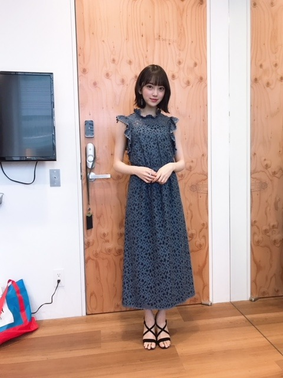
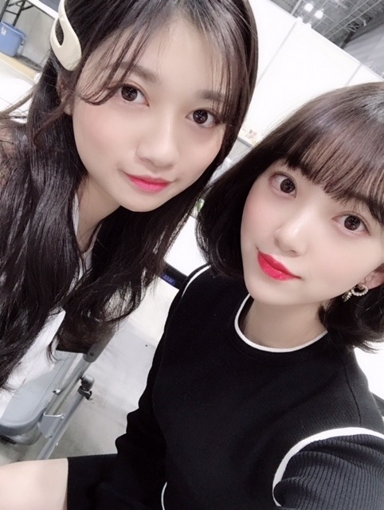

2019/0220Wed日本ブルーレイ大賞
日本ブルーレイ大賞の授賞式にアンバサダーとして出席させていただきました！✨
本番前は、ずっっと緊張しててメイクさんやマネージャーさんにあーどうしようーって話しかけてソワソワしてました。笑
衣装はブルーレイにちなんで鮮やかな青色のワンピースを用意していただきました☺︎
どうですか？

指輪も磁石タイプのイヤリングも可愛くて幸せでした。
大賞はグレイテスト・ショーマン、
私が選ばせていただいたアンバサダー特別賞はシェイプオブウォーターでした！
皆さんはブルーレイでもう観られましたか？？
ブルーレイだと、色も音も綺麗すぎてその映画の世界に飛び込んだ気分で観れますので断然おすすめです☺︎
グレイテスト・ショーマンは差別などの社会問題を描きながらもミュージカル映画ということで音楽やダンスを通して人々が前向きに生きていく姿が素敵なの！
主人公の男性を中心に成功と挫折を繰り返しながら夢や愛を求めていくヒューマン物語となっていて、辛いことがあったりうまくいかない日々が続いても、グレイテスト・ショーマンを観ると生きる希望が湧いてきます
監督の解説付き字幕が見応えたっぷりでした✨✨
おすすめ！
シェイプオブウォーターは声が出せなくなった女性と人間ではない生き物の純愛を描いたラブストーリーで、今までの概念にはない新たな愛の形が揺るぎない純愛で素敵だなぁと思いましたし、話のテンポも心地よくて、切なくとも美しい映画でした！
皆さんにも是非、色んな映画をブルーレイで観ていただけたらなと思います☺︎ステキな作品に出会えますように^ ^

そして舞台 漫画みたいにいかないを
絢音と観劇しにいきました！！
すっごく面白くて絢音とずっと笑いっぱなし^ ^
4月から始まるドラマも更に楽しみになりました✨
あ、ちなみに1話には私も出させていただきます...笑
ドキドキだー！ドキドッキドッキドキ
笑
あとね、たまたま絢音とその日のワンピース、上着、帽子、カバンがほとんど同じで双子コーデとやらになっていたのにも驚きました_φ(･_･

そうそう、ちょっと前に蘭世と絢音と夜ごはん食べに行ったんだけどたくさん食べて話して楽しかったな〜
焼肉を食べたんだけどね、2人を前にするとかわいい娘に見えて私がお肉を焼いてあげたくなってしまう衝動に駆られて何だかお母さん気分でした
って言いながらいつも2人につっこまれて1番子供なのは私なんだけどね...
とほほ...
明日からバースデーライブ4日間！
みんなで力を合わせて頑張ります！楽しみ✨
ちなみに私のサイリウムカラーはオレンジx白です！

顔をくっつけて寝るのが好き
ふさふさ。
では！


コメント(372)
ブログ更新ありがとうございます。
日本ブルーレイ大賞のアドバイザー、おつかれさまでした。緊張感がこちらにまで伝わってきましたが、それだけ充実していた証拠、何よりだと思います。
年末にCDショップで見かけたあのパンフレットの表紙、ホント可愛かったですね。CDショップへ立ち寄るのが楽しみでしたから‥‥。
さぁ、いよいよ明日から７thのバスラですね。久しぶりの全曲披露ということで、とても楽しみです。そして何よりうれしいのは、大阪公演ということで私も初めて参戦できること。昨夏のナゴヤドーム以来、大きなライブ、楽しみで楽しみで‥‥。
４日間ということで、体調管理もよろしくお願いしますね。
レコメン聞きながら、書いています。次回は、ノリさんのお誕生日ですからね。
Q.よんでもよんでも返事をしないものは何？
明日からバスラか〜
4日間全部外れたけど、頑張ってください！
4日目のなぁちゃんの卒ラはビューイングで見るから楽しみです！
夏の全ツの愛知は絶対に行きます！
あと3月の握手会も絶対に行きます！(わんちゃんいけません)
A.本(読んでも返事はしないから)
身体には気をつけてください。
kの裏
パシフィック・リムと同じ監督さんですよ。
グレイテスト・ショーマンも素晴らしかったですね。
体に気をつけてください。
ぽてとです！
ドレス似合ってるよ！
大人っぽさと可愛さの融合やー
明日からのバスラ
関西は気温高めで天気もまずまずやよー
今 ザンビ観てます :(；ﾞﾟ'ωﾟ'):
日本プルーレイ大賞授賞式のアンバサダーで
しかも特別賞を選ぶ立場になれるなんて、
よく考えたら凄い大役だよね！
未央奈はホント凄いよ～
それにしても、未央奈の映画の評論は本当にうまいよね。
その映画としっかりと向き合って、
映画からのメッセージを感性豊かに受け取って、
映画の良さがちゃんと伝わるように言葉にできるところが
本当に凄いなーって思う。
日本プルーレイ大賞授賞式のアンバサダーは、未央奈だから
選ばれたんだなーって改めて思ったよ。
あ、このワンピースを着た未央奈、綺麗だな～
ブルーの花の色とデザインが可愛くて素敵だよ。
4月のドラマの第一話、そしてその先にはホットギミックが待っている。
映画の賞を選ぶ立場から、今度はドラマや映画で演じる立場だね。
あ～あともう少し。めっちゃ楽しみだ～
最後の写真、こんなに幸せそうな犬の表情は見たことがない。
未央奈と一緒にいられて本当に幸せなんだろうな～
授賞式や囲み取材で大役でしたね。動画見たら眼の輝いてる美人で堂々としていて、とても綺麗でした。
作品を選ぶ理由に色や音楽と、ちゃんとブルーレイの良さが引き立つ理由も述べてたのも流石でした。
ブルーの服も似合ってますね。そういえばシェイプオブウォーターの”彼”は癒しや生命力を与えるときに青く発光してましたよね。その作品をブルーの服で選ぶということは、堀さんは人を癒して活力を与える存在だってことですね。いつも癒してくれてありがとうございます。
あと最後の写真可愛すぎます。犬は飼い主に似るとは言いますが、愛情を受けることが仕事という点でも似ているのかもしれませんね。
眠気が取れないくらい覚えること多くて大変かもしれませんけど、色々な色に発光する全ての人達と愛情や癒しや活力を与えあえる最高のライブにしてきてくださいね。応援してます。
普段からの積み重ねなんだろうなぁ
素晴らしい
バースデーライブ頑張って!!
くるりんぱ堀殿♡♡きゃわわうれぴーぽーo(￣◎￣)o ﾊﾞﾌﾞｩ♡
今から出発いたしますﾜﾝ (･x･U)≡≡≡３ バスラ堀殿♡ワクワクとまらんぜでばいころまるロンo(^-^o)(o^-^)oロンo(^-^o)(o^-^)oロン
バスラ行きます楽しみ～！
いよいよ今日からバースデーライブですね！
今回は久し振りに全曲披露という事で、覚える事沢山あると思うのでかなり大変だと思いますが、ライブが無事に成功する事を願っております！
未央奈ちゃんなら大丈夫です！自信を持ってパフォーマンスしてきて下さい！(^^)
自分は残念ながら、今回のライブを観に行く事が出来ませんので、気持ちだけでも京セラドームに送っておきます！
今日から4日間のバースデーライブ、頑張っていきましょう！
やっぱり緊張してたんだー笑
でも本番ではちゃんと話せてたよ！
すっかり頼れるお姉さんだなぁって
見違え…っとと、前回書いたコメントと
同じこと書くとこだった笑
メンバーといるとツッコまれて
子供扱いされちゃうみたいだけど
自分はそこがみおなの
お姉さん、お母さんらしいところだと思う
ツッコんでも大丈夫だって思われるような
包容力があるんだよ、きっと◎
グレイテスト・ショーマンいいよね！
自分は最後相棒の人に
帽子を託したのが心に残ってる
自分の夢のために人からの信頼を
集めてきた主人公が逆に
ようやく人を信頼できたんだなって
それと自分だけが成功して終わりじゃなく
それを受け継がせることも大事なんだなって
また長くなっちゃった！
バスラ、メンバーみんなで頑張ってね！
最終日、見に行くよー！
前回のブログで「楽しみなこと」と言っていたのはこのことでしたか、日本ブルーレイ大賞の授賞式でのアンバサダーとしての大役、お疲れさまでした。青のワンピースがすてきです。
ビデオからLDへ、LDからDVDへ、そして高画質のBlu-rayへ。映像の世界での技術の進歩のすばらしさ。おかげで僕たちはすばらしい映像を体験できるのでありがたいことです。
堀さんのブログに触発されて映画を観る人も多いことでしょうから、Blu-rayでお家で観る映画体験がますます楽しみになってきます。
そして。本日いよいよ乃木坂46の7thバースデイライブが開幕！
全曲披露ということで、きっと充実した四日間となることでしょう。体調に気をつけて走り抜けてください。応援しています。
ではまたコメント寄せますね。
さらばだ、また会おう！（気球に乗って去りぬ〜）
可愛いよ。
未央奈のオススメの映画観てみるね。
ありがとう！
ライブがんばってね。
お疲れ様！！ (^_-)-☆
おはようございます
ブルーレイ大賞授賞式お疲れ様でした
ラインニュースにもなっていました（前回の楽しみな事ってこの事だったんだね笑）
シェイプオプウォーターを堀ちゃんが推していたので、今度借りて観てみます
今日からバスラですね
全曲披露という事で楽しみにしてます
自分は最終日の4日目に行きますので、みんなでなぁちゃんの卒業を見届けましょう
自分は今日と明日まで仕事、堀ちゃんは今日から、バスラを頑張って下さい
楽しみつつ頑張ってね！
ありがとうございました
というか、未央奈さんはなにを着てもかわいくなります。
ブログ更新ありがとう
ドレス綺麗で素敵だね
バースデーライブ
頑張ってね
オススメ作品見るしかないでしょ！
ホットギミックも早く見たい！！
いよいよバスラですね！
残念ながら行くことはできませんが、心の中で精一杯応援させていただきます！
届くといいなー。
素敵なバスラになること祈ってます！
ファイト乃木坂！
ファイト未央奈！
未央奈は緊張する人だって知ってるけど、授賞式の動画を見る限りでは、ハキハキと落ち着いて質問に答えてるから、緊張してたって全然気づかないよ。
青色のワンピース・・・可愛い
それにイヤリングがとっても似合ってるよ。
個人的には青が大好きで、未央奈は青の洋服が似合うから嬉しいんだよね。
また青の洋服を着てほしいな～
ブルーレイはDVDに比べて画質がまったく違うよね。レンタルするのは専らブルーレイだよ。
それに乃木坂の22枚目シングルから特典映像がブルーレイになって、キレイな映像が見れるようになったから嬉しいんだよね。
シェープオブウォーターは観たよ。シェイプオブウォーターは「水の形」と直訳できるけど、そもそも水には形なんてないんだよね。なので「愛には決まった形はない」ということを人間と人間以外の生物との愛によって表現した作品だと思ったよ。
未央奈と絢音ちゃん、蘭世ちゃんの3人で食事に行ったのか
楽しそうでいいな～
この3人だと未央奈がはしゃいでいるのを2人が優しく微笑んでいるという光景が思い浮かんだんだけど、合ってるかな？
握手会等で未央奈がスッゴくテンションが高くてはしゃいでるときがあるけど、はしゃいでる未央奈も面白いし・可愛いし好きなんだよね。
今日からバスラ4日間だね。
バスラは2日目、3日目に行くからみんなで楽しもうね。
ゴロ～
ブログ更新、ありがとうございます♪
ブルーレイ大賞の授賞式に出席したんですね♪
お疲れ様でした‼︎
未央奈の出席、いくつかのメディアにも取り上げられてますね〜
女優としての未央奈への期待とか、比較的好意的な報道が多くて、なんか嬉しくなっちゃいます♪
ブルーのドレス、清楚で上品で、とっても可愛い…‼︎
自分の好みど真ん中です♪
グレイテスト・ショーマンの大賞受賞。
もう、納得の受賞ですね‼︎
音楽と映像が本当に素晴らしい。
その迫力に、何度も何度もうるっとさせられました。
ストーリー展開はそれほど複雑じゃなくて、努力、成功、挫折、大事なものの再発見という、比較的シンプルなものだけど、だからこそ音楽も映像も際立つような気がします…‼︎
何度も何度も観たくなる作品。
奇想天外なストーリーで観る側を惹きつける映画も楽しいけど、ブルーレイだったら、こういうタイプの映画の方がいいかなあって思います♪
シェイプオブウォーターは、まだ観たことないなあ。
今度、機会があったら観てみますね‼︎
最後の写真は、プティ君かな？
この写真のクオリティ、すごいですね‼︎
こんな瞬間、プロのカメラマンでもなかなか捉えられないですよ。
二人とも、最高に幸せそうな表情。
見ているだけで幸せな気分になります♪
彼らのふわふわ感って、めっちゃ気持ちいいですよね‼︎
彼らに触れていると、1日の疲れも吹っ飛びます♪
さて、今日からバースデーライブですね。
しっかり準備して、思いっきり楽しんでください‼︎
自分は現地には行けないけど、遠くから応援してます。
ではでは、また。
今日も未央奈にとっていい1日になりますように♪
日本語の勉強がんばって,レコメン絶対聞きますよ。
ブルーレイ大賞の授賞式お疲れさま！
青のワンピース姿のみおちゃん素敵だった〜！
緊張感伝わってきたけどしっかり務められてよかったね☺︎
2期生同士でご飯食べたとか遊んだとか聞くと嬉しくなる！
楽しめたみたいでよかった〜！
息抜き大事だからね☺︎
今日からバスラ4日間！
全曲披露大変だと思うけどがんばってね！！
3日間客席からみおちゃんがデザインした水色のタオルと、オレンジ×白のペンライト持って見るよ❤︎
みんなが無事に怪我なく終われますように！
アンバサダーお疲れ様でした
スゲーっすね！
さすが映画観様✨
これからもいろんな映画紹介してください。
オレは邦画の方が好きなので是非邦画を(๑˃̵ᴗ˂̵)
洋画もアクションとかSFは好きですよ(^-^)
蘭世その髪型珍しい！前髪がちょこっとある！！
貴重な写真ありがとうヾ(o´∀｀o)ﾉﾜｧｰｨ♪
今日からバスラ頑張ってね！
明日はオレも行くよー
では、バスラ楽しもうd(@^∇ﾟ)/ﾌｧｲﾄｯ♪
o(ﾟ▽＾)ﾉｼまたねぃ♪
授賞式は素晴らしくて感動しましたよー！！
授賞式の未央ちゃんは凄く凛と見えました！
緊張感の中でとっても堂々としてましたよ♡
ブルーの衣装姿もとっても可愛いらしいし、
女優さんの記者会見のように見えました♡♡
映画は是非ブルーレイで観たいと思います☆
絢音ちゃんとは本当に気が合う様だし(笑)、
蘭世ちゃんとも仲良しでとっても良きです♪
今回のプティくんも羨ましくて仕方ない～！
未央ちゃんへの熱は既に上がってるけど、、
体の熱も上がってしまい今日寝込んでます...
バスラ無理せずに楽しんで下さいね～☺
授賞式お疲れ様でした(*´꒳`*)
写真もありがと〜♪(๑ᴖ◡ᴖ๑)♪
衣装も素敵ですねー
作品どちらとも観たこと無いから観てみるねー！
絢音ちゃんと舞台観劇出来て楽しめて良きでしたね！
双子コーデになるとは仲良しさんですなー(´⊙ω⊙`)
蘭世ちゃんと絢音ちゃんと焼肉行ったんだねー
楽しそうな感じが伝わります笑
いよいよバースデーライブですねー！
いま博多から新幹線で向かっております٩(๑❛ᴗ❛๑)۶
楽しみにしております(● ˃̶͈̀ロ˂̶͈́)੭ꠥ⁾⁾
頑張ってねー
ブルーレイの動画も繰り返し観ましたよ。
大阪で未央奈やメンバーと偶然街中で会うことなんて
ないのかな？
ブルーのワンピース似合ってる。
アンバサダーが務まるのも映画好きな未央奈だからこそだね。
絢音と蘭世と仲よさそうで良き良き。
バスラ頑張ってね！
そしておめでとう㊗️
短くたごめんね
４月から始まるドラマに堀さんが１話に出るのですね。
今年は映画のホットギミックとドラマを
楽しめます。
ブルーレイというのがあるのですね。
僕は金曜日の夜９時からテレビで
映画を見ることが多いです。
最近はスターウォーズ・ローグワンという作品を
見ました。
会話の部分と戦闘の部分を両方楽しみました。
ではまたコメントしますね☆
未央奈ちゃん一人でのイベントは中々ないから、貴重でした♪
レコメン！は収録回でしたが、盛り上がってましたね！
楽しかったです♪☆
久しぶりのメッセージになります …
前にコーヒーを飲めない君に自分で入れるこ推めたけど、SmartNewsのアフタートークを観てアイドルの未央奈にはハーブ ティーのほうが合ってるなぁと思いました。
遂に飛散してきた花粉 対策としても心理・身体的にもとても有効だし、歯のくすみの心配もないから将来的にも安心だしね……
くすみと言えば、ブルーレイ大賞授賞式のグレイががったブルーの衣装素敵でした。元日に紹介してくれた新衣装のと同様に未央奈がお気に入りと言ってたくすんだ青ーー本当にお似合いです❕❗️
やっぱり、ショートヘアで自分の好きな色の服をまとった未央奈は最強です。内心ドキドキしいていたようですが、緊張で声がひっくり返りそうになったり言葉がつまったりしないのは、Radioの生放送で場数を踏んだ賜物なのでしょう➰
ニコニコしながら質問者の意図を間違えることなくスラスラ答えるのは、LIVEで出演者やリスナーの言わんとすることを汲み取ってタイミングよく自分の考えを言い表す経験が多くないとなかなかできることではないですから…
これからバスラの初日を控えていて不安が募っていることでしょう。でも昨夜のレコメンの収録放送で語っていたように、「お祭り感覚あるなかで今までの集大成をみせなければ…」という緊張感に打ち勝つにはあまり頭でっかちにならずに、いっぱい食べて未央奈特有のセンスで対処した方がイイのでは⁉️
４日間思いきってパフォーマンスして下さい➿
自分は先行・一般も入手できず、カップ麺の抽選も外れ、無事成功を願うだけです
PS.自分もくすんだ青が好きなんですが、お気に入りのKSのフレーム、去年の大掃除に何処かにいってしまって今身につけられません。
２番目にお気に入りなのは、なんとNICOLE（ニコル）のです✨ 未央奈の愛犬と同じ名前でくすんだグレーのものです。
去年のXmasのblogにニコルちゃんの画像がアップしてあったので、今度は２ショットの“顔面”を紹介してね ➰
では、また！
アンバサダーお疲れ様!
絢音ちゃんとほんと仲良しだね(*´`)
2人の写真いっぱい見たいです!
ライブ4日目行くよ〜(^-^)/
ほんとに楽しみ!
明日からもfight!!
それで無事に完走出来ることを祈っているよ。
青色のワンピース姿の未央奈、とっても可愛いよ
蘭世と絢音ちゃんと焼肉いいね～
焼肉好きなメンバー多いよね(笑)
それと、未央奈の母性が溢れてる(笑)
今日はバスラ初日、楽しんでるかい？
未央奈のサイリウムカラー、バッチリよ
では、京セラで会おう
またねっ！
僕もよくBlu-ray買います。
特によく見てるのは文豪ストレイドックスです。昔実在した文豪たちがキャラクターとして闘うアニメです。
よかったら見てみて下さい。
未央奈はもっとかわいすぎ
コメントする